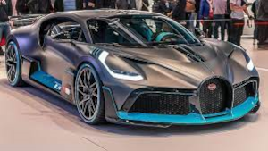

Info Car's
Bugatti La Voiture Noire
O La Voiture Noire (“o carro preto” em francês)
foi criado com base no Chiron para homenagear
o modelo Type 57 SC Atlantic, de 1936, projetado
pessoalmente por Jean Bugatti.
O modelo novo traz vários adereços que remetem
ao clássico, como o entre-eixos estendido, a carroceria
musculosa e o interior feito de couro marrom.
Audi R8

Imagine um carro altamente exclusivo com cada
unidade sendo configurada na hora da compra e
produzida de acordo com as especificações solicitadas.
O comprador pode escolher desenho das rodas, cores
diferentes para teto, retrovisores e pinças de freio
e o acabamento interno. Esse modelo é o Audi R8, vendido
no Brasil em versão única Coupé Quatro S Tronic.
Porsche 911 Cabriolet

A silhueta clássica do 911 também distingue os
modelos Cabriolet. Eles estão equipados com uma
capota totalmente automática. O teto pode ser
aberto e fechado em apenas 12 segundos.
Aliás, até uma velocidade de 50 km/h.
Compass

A atual linha do novo Compass 2022 conta com
as versões de acabamento Sport, Longitude, Limited
e Trailhawk, disponíveis com motores 1.3 turboflex, câmbio
automático de seis marchas e tração 4×2 ou
2.0 litros turbodiesel, transmissão automática
de nove velocidades e tração nas quatro rodas.
Hilux

A gama da nova Hilux 2022 conta com diversas
configurações diferentes, tendo motor 2.7 litros
flex e câmbio manual ou automático e tração 4×2
ou 4×4 e o propulsor 2.8 litros turbodiesel, ofertado
com transmissão manual ou automática, sempre
com tração 4×4.